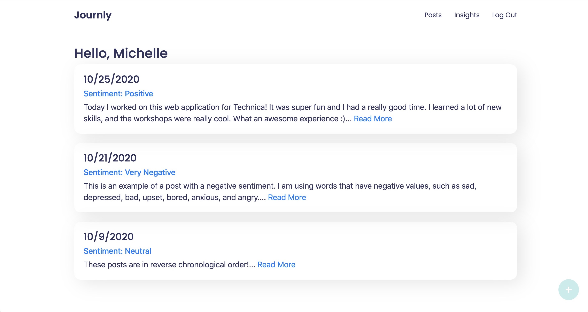
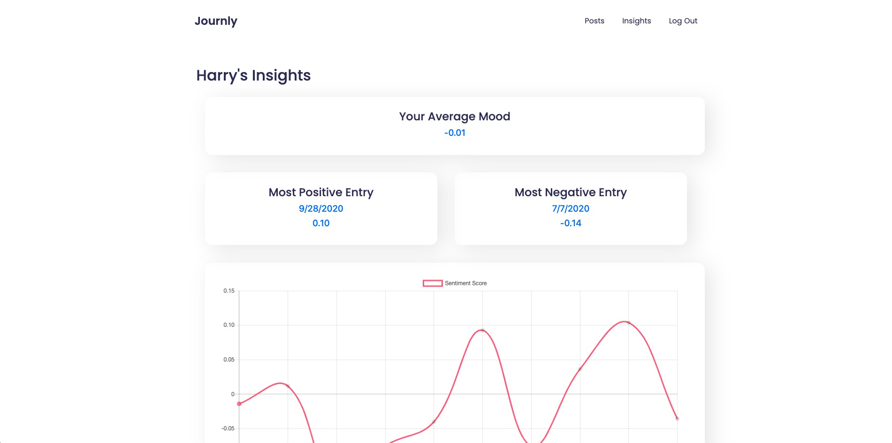

Journly
-
More than just a journal.
> Go to website
> GitHub Repository -

-
Journly is a web application that allows users to create daily journal entries and then uses sentiment analysis to produce insights about these entries over time. This project was created for Technica 2020, the world's largest all-women and nonbinary hackathon!
-
Sentiment Analysis
-

When a user publishes a new entry, Journly will assign salient words a normalized value ranging from -1 to 1, with -1 corresponding to an entry that is strongly negative, while 1 corresponds to an entry that is strongly positive. Then, the entry as a whole is given an overall "polarity" score based on these individual values and given an asessment as very negative, negative, slightly negative, neutral, slightly positive, positive, or very positive.
-
Insights
-
Journly also features an "insights" section, where a user can see different trends and data points from thier entries over time. Based on the sentiment scores from all their posts, Journly will show a user's "average mood," most positive entry, most negative entry, and a chart that plots how the user's mood has changed over time.
